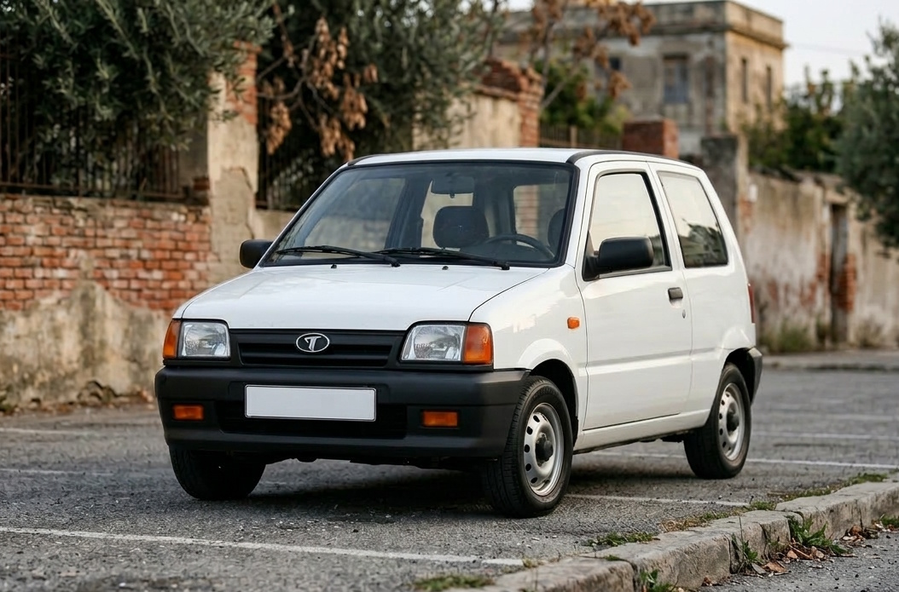
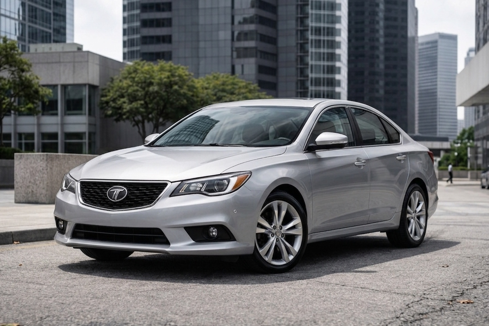
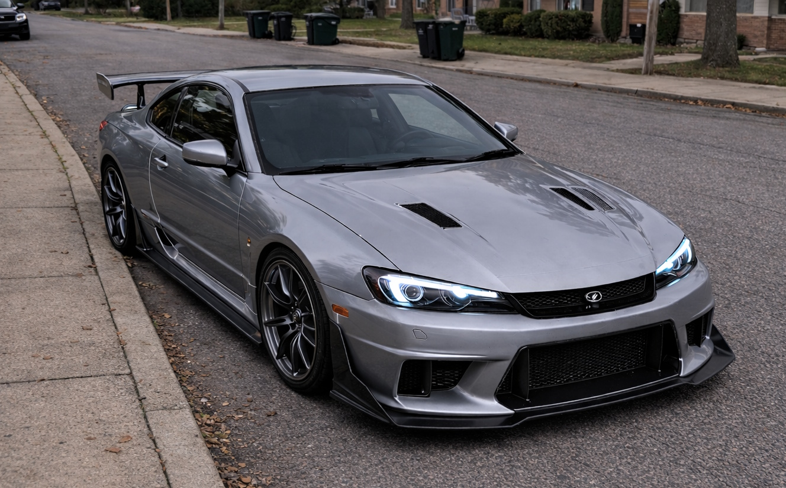
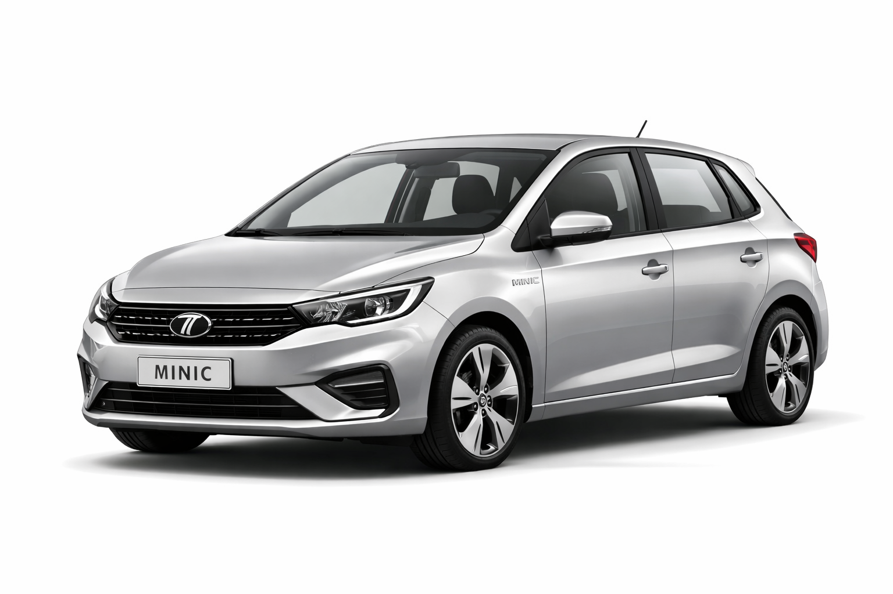

Tarifa Auto
Tarifa Auto — автомобильное (легковое) подразделение компании Tarifa, созданное в 2011 году для запуска доступных гражданских автомобилей, в первую очередь для Кивиша Корейского Полуострова (КПП). Подразделение известно «народной» моделью Misi-N, краткой серией среднеразмерного седана Style и нишевым проектом Revint Di3, ориентированным на фанатскую культуру конца 2010-х.
История
2011: Создание подразделения и запуск Misi-N

Подразделение Tarifa Auto было оформлено в 2011 году, когда государству потребовалось быстро укрепить доверие населения КПП и запустить массовое обучение вождению. Отдельным требованием было наличие скромной, дешёвой и «непугающей» машины для новичков. F-KAP, ориентированная на полноценные автомобили обычного класса, не смогла предложить столь минималистичную концепцию, и задачу взяла на себя Tarifa.
Первой моделью стала Tarifa Misi-N — предельно простой городской автомобиль. Техническая философия строилась на максимальной дешевизне владения: использовались облегчённые решения и переработанный силовой агрегат, полученный из более крупного мотора коммерческой техники Tarifa начала 2000-х (упрощение и сокращение числа цилиндров). Одновременно для автомобильного направления была введена отдельная символика/вариант логотипа, чтобы отделить «легковую» линейку от грузовой и спецтехники.
2013–2017: Style и «короткая эра» легкового расширения

В 2013 году Tarifa предприняла попытку выйти в сегмент среднеразмерных легковых автомобилей, выпустив Tarifa Style. Модель воспринималась как неожиданный конкурент легковой линейки F-KAP: общественное внимание в 2013–2014 годах подогревалось самим фактом, что «производитель фургонов и тягачей» смог представить современный по дизайну седан. При этом к 2014 году первичный ажиотаж закономерно угас: рынок вернулся к спокойному выбору между брендами.
В 2017 году выпуск Style завершили: было произведено ограниченное количество машин, после чего проект закрыли как завершённый эксперимент, не ставший основой для большого семейства моделей.
2019–2021: Revint Di3 — фанатский проект

В 2019 году Tarifa запустила нишевую модель Tarifa Revint Di3, задуманную как «машина эпохи Skyline R34» — обращение к эстетике и культуре уличных гонок прошлого, особенно востребованной на японском направлении. Проект имел яркий имиджевый характер: его обсуждали в фан-среде, одну из машин использовали в кино, однако рынок оставался узким. В 2021 году продажи и выпуск Di3 прекратили: для нишевого купе 2–3 года серийной жизни считались успешным результатом.
2022–2025: Пауза на фоне обновления основной линейки Tarifa
После крупного обновления основных платформ Tarifa (коммерческий транспорт, минивэны, тягачи и спецтехника) в 2022 году Tarifa Auto на несколько лет ушла в режим минимальных изменений, концентрируясь на сопровождении существующих моделей и инфраструктуре обслуживания. Рассматривались идеи ребейджинга (переклейка логотипа на готовые зарубежные автомобили), но от них отказались как от репутационно токсичных для бренда, который исторически ценился за честную инженерную идентичность.
2023: Завершение выпуска Misi-N
В 2023 году производство Misi-N было окончательно остановлено. Последняя машина была продана Ли Ён Джуну; сделку в дилерском центре отметили символически — аплодисментами и хлопушками, как «финал эпохи» самой доступной и массовой модели подразделения.
2026: Tarifa Minic и «скучный год»

В 2026 году Tarifa Auto выпустила хэтчбек Tarifa Minic, который критики назвали «абсолютно обычным»: модель не стала ни провалом, ни хитом и воспринималась как попытка «закрыть сегмент», не предлагая ярких решений. В сети появлялись обсуждения о том, что подразделение утратило прежний драйв и перестало соответствовать завышенным ожиданиям, сформированным периодами Misi-N и Style.
Модели
- Misi-N (2011–2023) — сверхдоступный городской автомобиль для массовой моторизации КПП.
- Style (2013–2017) — седан среднего класса, краткая серия без продолжения.
- Revint Di3 (2019–2021) — имиджевый проект в стиле конца 1990-х, ориентированный на фанатов.
- Minic (с 2026) — типовой хэтчбек, воспринимаемый как «нейтральный» продукт.
Особенности
- Региональный старт — подразделение создавалось под задачи КПП, а не как «обычный» коммерческий запуск.
- Прагматичная инженерия — ставка на дешёвое владение, простые агрегаты и ремонтопригодность.
- Имиджевые вспышки — Style и Revint Di3 работали на репутацию и разговор о бренде, а не на массовый рынок.
Критика
Tarifa Auto критиковали за отсутствие длинных продуктовых циклов (быстрое закрытие Style и Di3) и за «потерю искры» в середине 2020-х, когда Minic воспринимался как безликий продукт. Одновременно подразделение часто хвалили за честную позицию против ребейджинга и за роль Misi-N в массовой моторизации КПП.
См. также
Примечания
- Материал основан на вымышленной вселенной Neverpedia.